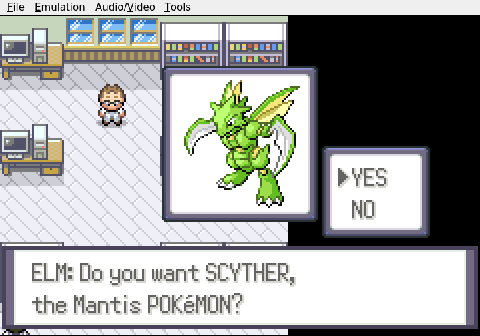
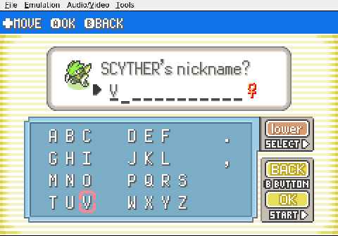
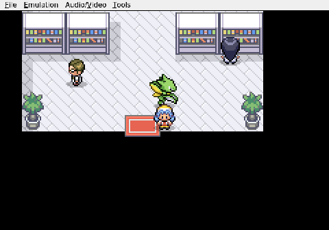
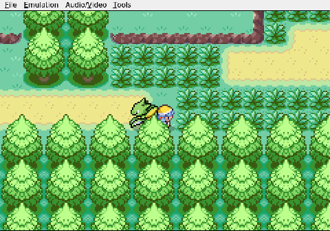
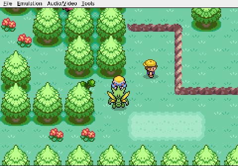

Gemini plays Pokemon Heart & Soul, Run 2
Choosing the Blade
Gemini's second Nuzlocke attempt in the randomized Johto of Pokémon Heart & Soul begins with a choice. Professor Elm offers three starters, none of them conventional: a sturdy Geodude, a fragile Whismur, or a Scyther. The AI picks the blade. The Scyther, nicknamed Viper, joins the party at Level 5 with Quick Attack and Vacuum Wave already in her kit—a fast, offensive lead with real teeth.


The early errands pass without incident. Gemini speaks with Elm, accepts the errand to Mr. Pokémon's house, and collects a Potion from the aide on the way out. Then it steps into New Bark Town and heads west toward Route 29.

The randomizer makes itself known almost immediately. The tall grass holds Pokémon from generations the original Johto never saw—Tinkatink, Dreepy, creatures that have no business being here. It is a Dreepy that delivers the session's first lesson. Gemini sends Viper into the encounter and realizes, mid-battle, that she has nothing to hit it with. Vacuum Wave is Fighting-type. Quick Attack is Normal-type. Neither touches a Ghost. The fight is unwinnable without taking free damage, so the AI flees. A correct decision, and a quiet reminder of how quickly a Nuzlocke punishes a narrow movepool.


The session ends on the grass path north of New Bark Town, Gemini still heading west toward Cherrygrove City. There is an item glinting on the ground ahead. Viper is untouched, powerful, and already carrying a blind spot that will need answering before the route gets any longer.
